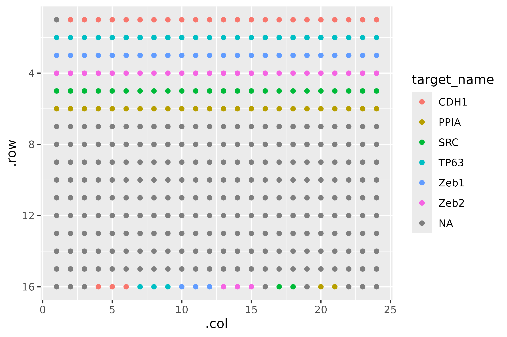
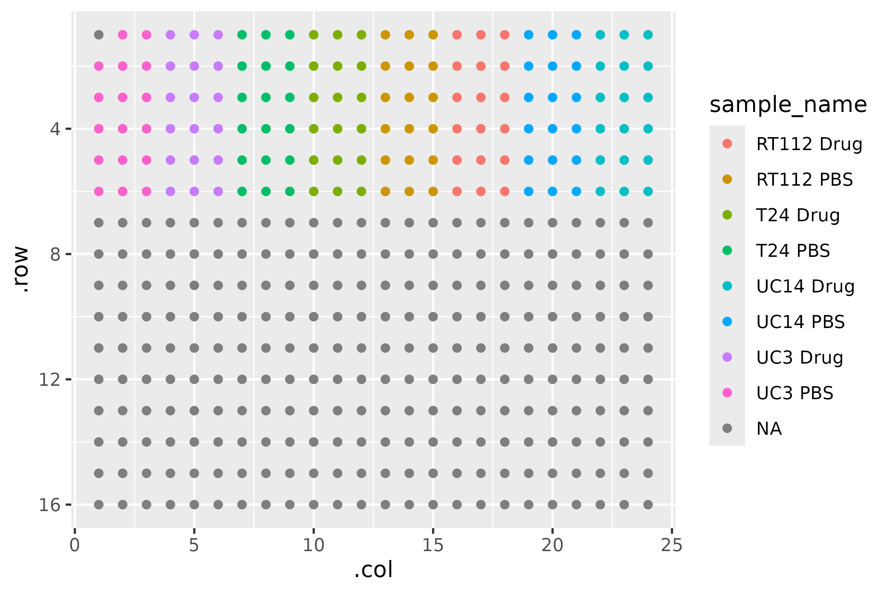
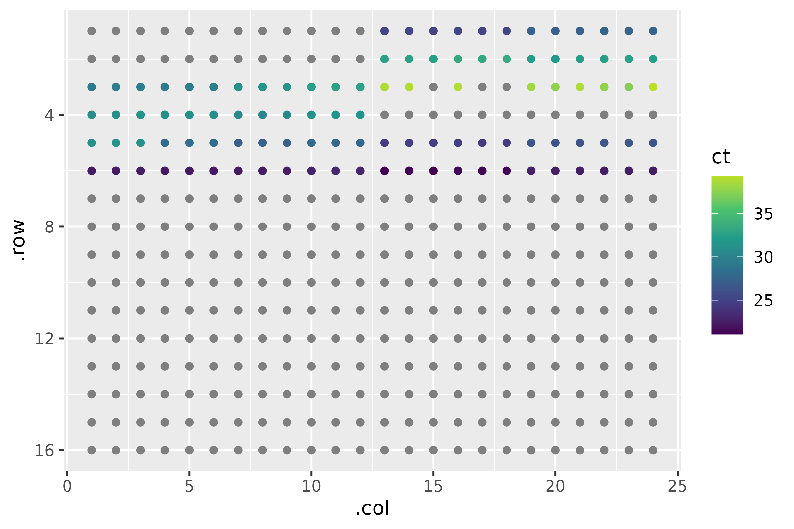
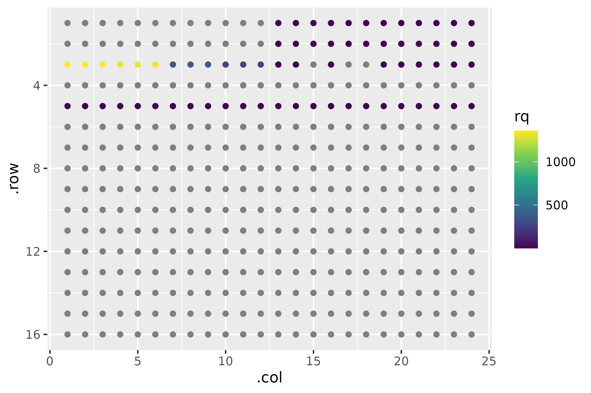
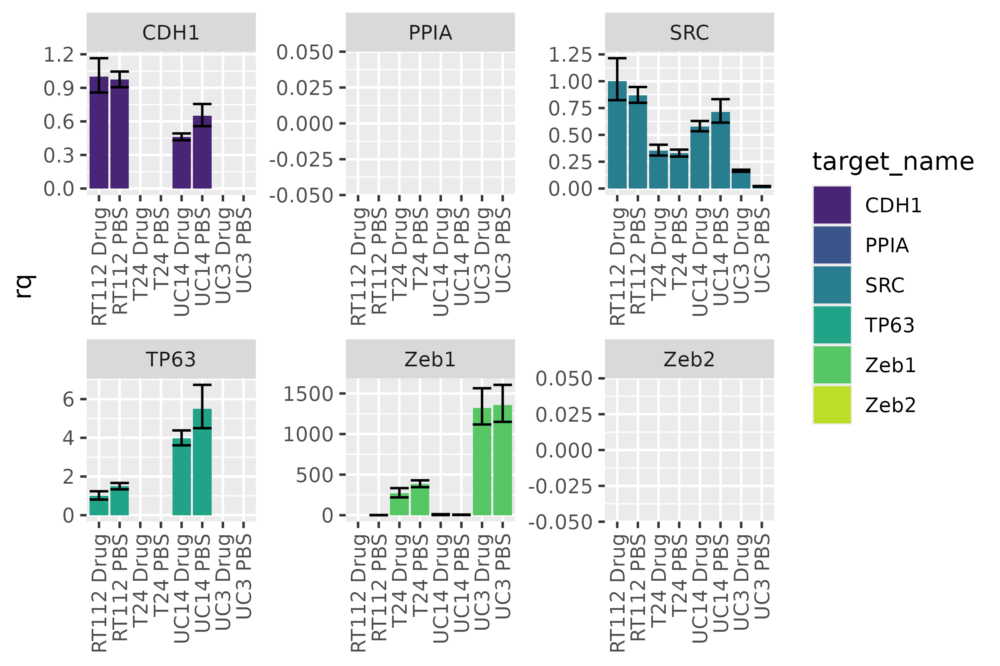
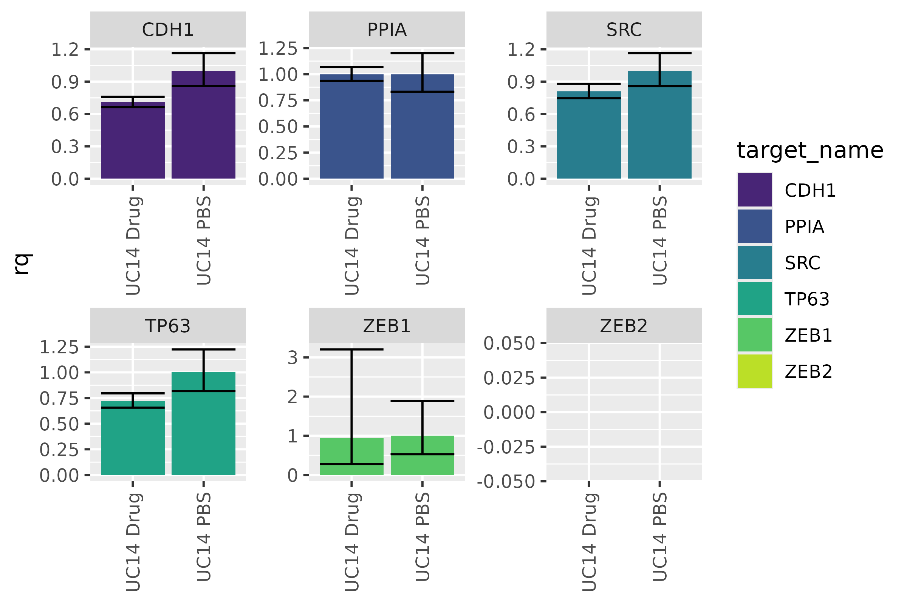
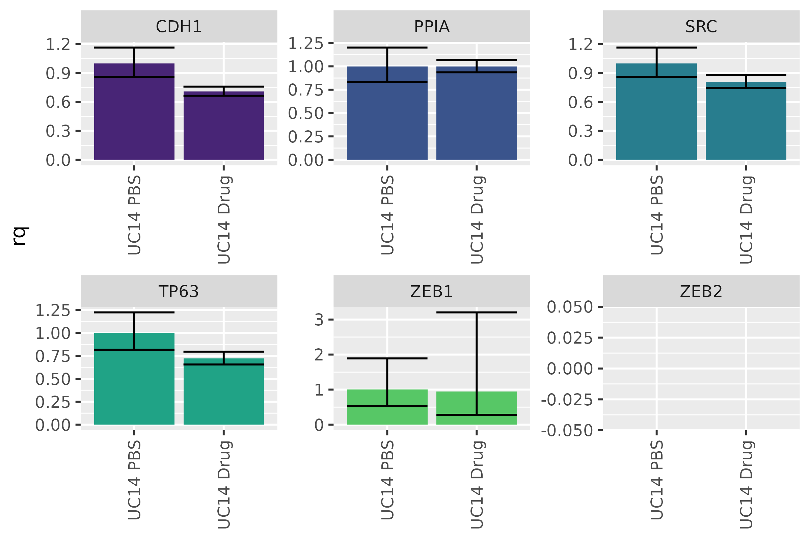
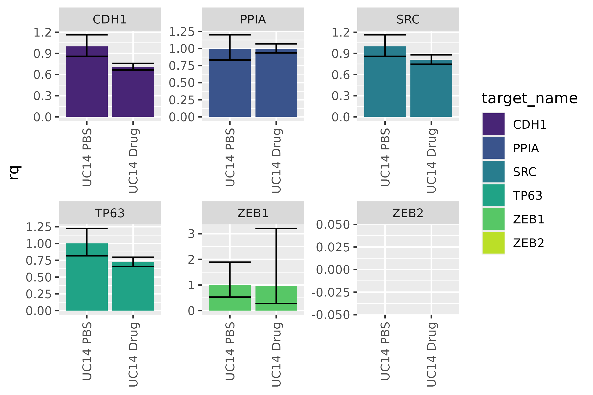
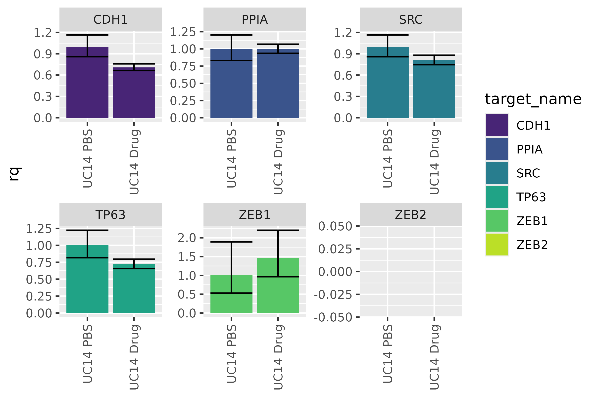

Analyzing ddCt qPCR with amplify
analyzing-ddctqrtpcr.RmdIntroduction
PCR data appear to be simple to work with at the outset - QuantStudio can output barcharts, and it even readily outputs the data in tabular formats. However, some tasks, like omitting a particular measurement, no longer make the results valid. One must remember to omit it in QuantStudio, recalculate the values, then plot the results - or risk having an inaccurate plot!
Additionally, the plots output by QuantStudio are fairly ugly and inflexible. Outputting them is tedious, as is rearranging columns.
In this vignette, I’ll perform a routine analysis on a rather untidy
dataset using the pcr_* suite of functions. The
pcr_* suite of functions seek to make life a little easier
and a lot more reproducible by allowing many of the previously
QuantStudio specific tasks to be done in R.
Reading in Data
library(amplify)
library(dplyr)
#>
#> Attaching package: 'dplyr'
#> The following objects are masked from 'package:stats':
#>
#> filter, lag
#> The following objects are masked from 'package:base':
#>
#> intersect, setdiff, setequal, union
library(ggplot2)
library(stringr)We have a particular advantage because although the data are untidy,
they are untidy in a very specific way. Reading in data is as simple as
running read_pcr and scrub (re-exports from
the mop
package), which is given a path to the pcr .xls(x) file. If no path is
given, an interactive file explorer window will appear for the user to
choose the file.
dat <- system.file("extdata", "untidy-pcr-example-2.xlsx", package = "amplify") |>
read_pcr() |>
scrub()
#>
#> ── Column specification ────────────────────────────────────────────────────────
#> cols(
#> .default = col_double(),
#> `Well Position` = col_character(),
#> Omit = col_logical(),
#> `Sample Name` = col_character(),
#> `Target Name` = col_character(),
#> Task = col_character(),
#> Reporter = col_character(),
#> Quencher = col_character(),
#> Quantity = col_logical(),
#> `Quantity Mean` = col_logical(),
#> `Quantity SD` = col_logical(),
#> CT = col_character(),
#> `Delta Ct` = col_logical(),
#> `Automatic Ct Threshold` = col_logical(),
#> `Automatic Baseline` = col_logical(),
#> Comments = col_logical(),
#> EXPFAIL = col_character(),
#> HIGHSD = col_character(),
#> NOAMP = col_character(),
#> THOLDFAIL = col_character()
#> )
#> ℹ Use `spec()` for the full column specifications.
#> ! Multiple files in zip: reading ''[Content_Types].xml''
#> Object is not tidy - tidying.
dat
#> # A tibble: 384 × 41
#> .row .col well well_position omit sample_name target_name task reporter
#> <dbl> <dbl> <dbl> <chr> <lgl> <chr> <chr> <chr> <chr>
#> 1 1 1 NA NA NA NA NA NA NA
#> 2 1 2 2 A2 FALSE UC3 PBS CDH1 UNKNO… FAM
#> 3 1 3 3 A3 FALSE UC3 PBS CDH1 UNKNO… FAM
#> 4 1 4 4 A4 FALSE UC3 Drug CDH1 UNKNO… FAM
#> 5 1 5 5 A5 FALSE UC3 Drug CDH1 UNKNO… FAM
#> 6 1 6 6 A6 FALSE UC3 Drug CDH1 UNKNO… FAM
#> 7 1 7 7 A7 FALSE T24 PBS CDH1 UNKNO… FAM
#> 8 1 8 8 A8 FALSE T24 PBS CDH1 UNKNO… FAM
#> 9 1 9 9 A9 FALSE T24 PBS CDH1 UNKNO… FAM
#> 10 1 10 10 A10 FALSE T24 Drug CDH1 UNKNO… FAM
#> # ℹ 374 more rows
#> # ℹ 32 more variables: quencher <chr>, quantity <lgl>, quantity_mean <lgl>,
#> # quantity_sd <lgl>, rq <dbl>, rq_min <dbl>, rq_max <dbl>, ct <dbl>,
#> # ct_mean <dbl>, ct_sd <dbl>, delta_ct <lgl>, delta_ct_mean <dbl>,
#> # delta_ct_sd <dbl>, delta_ct_se <dbl>, delta_delta_ct <dbl>,
#> # automatic_ct_threshold <lgl>, ct_threshold <dbl>, automatic_baseline <lgl>,
#> # baseline_start <dbl>, baseline_end <dbl>, comments <lgl>, expfail <chr>, …The typical format of PCR data is woefully non-rectangular.
amplify fixes this by skipping to the good bits, but also
pulling out useful metadata supplied in the header and footer of the
dataset - like the last few columns:
select(dat, analysis_type:reference_sample)
#> # A tibble: 384 × 4
#> analysis_type endogenous_control rq_min_max_confidence_level reference_sample
#> <chr> <chr> <chr> <chr>
#> 1 Singleplex PPIA 95.0 RT112 Drug
#> 2 Singleplex PPIA 95.0 RT112 Drug
#> 3 Singleplex PPIA 95.0 RT112 Drug
#> 4 Singleplex PPIA 95.0 RT112 Drug
#> 5 Singleplex PPIA 95.0 RT112 Drug
#> 6 Singleplex PPIA 95.0 RT112 Drug
#> 7 Singleplex PPIA 95.0 RT112 Drug
#> 8 Singleplex PPIA 95.0 RT112 Drug
#> 9 Singleplex PPIA 95.0 RT112 Drug
#> 10 Singleplex PPIA 95.0 RT112 Drug
#> # ℹ 374 more rowsPlate Plotting with pcr_plate_view
pcr_plate_view makes it very easy to get a bird’s-eye
view of the plate:
pcr_plate_view(dat)
This high level overview lets us see there’s something curious going on with A1. Additionally, some wells at the bottom - likely non-targeting controls - only have two instead of three wells ascribed to them.
What about the sample layout?
pcr_plate_view(dat, "sample_name")
We can also look at CT:
pcr_plate_view(dat, fill = ct) +
scale_color_viridis_c(end = 0.9)
Looks like some didn’t amplify at all. You might consider looking at
it with rq but…
pcr_plate_view(dat, fill = rq) +
scale_color_viridis_c()
Immediately we see a loss of information: Not only are the scales between cell lines wildly different, but some of the targets aren’t even there! What’s going on?
If we remember back, our reference sample was RT112, which does not appear to express one of the targets at all. Therefore a quantity relative to 0 doesn’t make any sense!
Expression Plotting with pcr_plot
We can naively plot all of the data at once using
pcr_plot
pcr_plot(dat)
#> Warning: Removed 24 rows containing missing values or values outside the scale range
#> (`geom_col()`).
We notice the differences between cell lines, but the large dynamic range makes it difficult to look at differences between conditions. We can split the data up by cell line and then recalculate rqs individually.
Rescaling Data with pcr_rq
First, we need to extract the cell line from the sample name. Additionally, I don’t like how it says “Zeb1” and “Zeb2” instead of “ZEB1” and “ZEB2” (the capitalization may mislead people into thinking this is murine, when it is in fact human). I’ll change that here.
dat <- dat |>
mutate(cell_line = str_extract(sample_name, "^.*(?=[:space:])")) |>
mutate(target_name = str_replace(target_name, "Zeb", "ZEB"))As an example, let’s look at UC14:
uc14 <- dat |>
filter(cell_line == "UC14") |>
pcr_rq("UC14 PBS")
pcr_plot(uc14)
#> Warning: Removed 2 rows containing missing values or values outside the scale range
#> (`geom_col()`).
I personally prefer it when the control is on the left and the experimental conditions are on the right - let’s flip them. While we’re at it, let’s get rid of the legend - it doesn’t tell us any extra information and is just taking up space.
uc14 <- uc14 |>
mutate(sample_name = factor(sample_name, levels = c("UC14 PBS", "UC14 Drug")))
pcr_plot(uc14) +
theme(legend.position = "none")
#> Warning: Removed 2 rows containing missing values or values outside the scale range
#> (`geom_col()`).
The same kind of reorganization can be done with
target_names as well - if you wanted to put the control
target (here PPIA) at the end.
Ommiting a case
Suppose you have reason to believe that one of your colleagues (or perhaps you yourself) spit into your C22 well (the spit was very accurate). If we naively remove it, this is what we get:
naive <- uc14 |>
filter(well_position != "C24")
pcr_plot(naive)
#> Warning: Removed 2 rows containing missing values or values outside the scale range
#> (`geom_col()`).
Umm…it doesn’t look any different. And that’s what we should expect:
the plotting function doesn’t do any calculations: It only plots
the values already stored within it. To get updated values, we
need to use pcr_rq again:
wise <- uc14 |>
filter(well_position != "C24") |>
pcr_rq("UC14 PBS")
pcr_plot(wise)
#> Warning: Removed 2 rows containing missing values or values outside the scale range
#> (`geom_col()`).
Now, we see that the ZEB1 values have updated to reflect the omission we made.